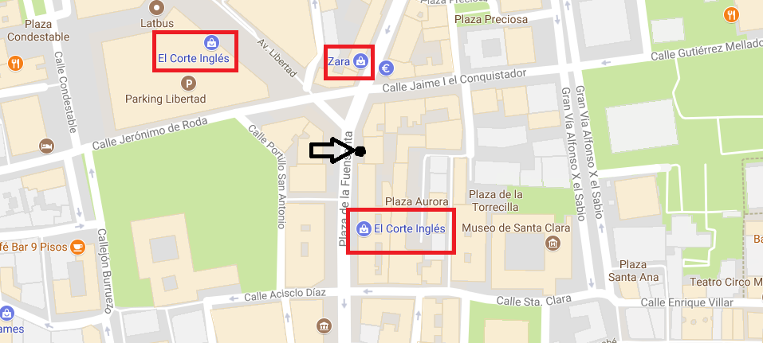
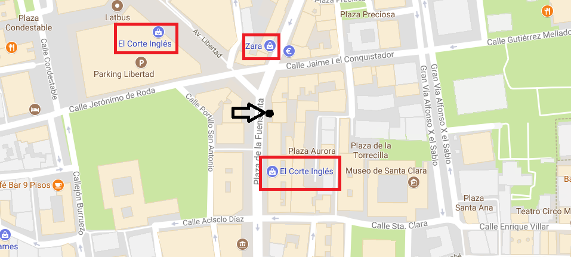

Propietarios del Quiosco
Antonio Lucas Marcos y Maria Dolores Contreras Meseguer son las personas que regentan este quiosco de Prensa y Revistas. Empezaron a trabajar en él en 1993
cuando se mudaron de Yecla, aunque anteriormente Maria Dolores había estado ya trabajado en el quiosco con su madre Maria Dolores Mesguer Caballero. No hay día que
no habran el quiosco, salvo festivos que no hay prensa y dias por causa mayor.
Esperemos que estén contentos con el trato recibido por esta profesional pareja.
Adiós a una luchadora incansable

María Dolores Meseguer, fallecida en Murcia a los 91 años de edad, regentó desde 1968 el quiosco de prensa ubicado en la plaza de la
Fuensanta de la capital murciana, un local de los antiguos, pequeño y cuadrado, cuando en la zona solo había solares, dos edificios,
un sanatorio y poco más. Poco después, el quiosco se hizo un poco más grande, al compás del crecimiento de la ciudad. Así, fueron
aparececiendo la Gran Vía y muchos más edificios, quedando el suyo como uno de los quioscos emblemáticos de la capital.
María Dolores fue presidenta de la Agrupación de Vendedores de Prensa hasta finales de los años 80, siendo requerida por distintas
asociaciones nacionales para diversos encuentros del sector, a los que siempre aportó su carácter constructivo e idealista.
También fue cofundadora de la actual Asociacion de Vendedores Profesionales de Prensa, y una de las piezas fundamentales para poner
en marcha el proyecto que permitió unificar el modelo de los quioscos de Murcia y sus pedaníaas, dando así una imagen colectiva al sector,
y mirando siempre por los vendedores de prensa. Incluso cuando alcanzó la edad de jubilacion, continuó asesorando en diversos asuntos a los
actuales responsables del sector. Luchadora incansable, personalidad y carácter sirven para definirla.
Era una persona muy respetuosa y amiga de sus amigos, pero -sobre todo-, una gran madre.
Titulo de prueba2
Cras placerat vehicula est. Pellentesque quis justo ante. Cras hendrerit ligula ante, eu feugiat massa euismod at. Mauris euismod cursus
leo, et varius lectus pulvinar id. Curabitur hendrerit dolor ullamcorper, mattis elit ac, aliquet arcu. Class aptent taciti sociosqu ad litora
torquent per conubia nostra, per inceptos himenaeos. In et enim eleifend, commodo dui a, maximus ipsum. Sed et leo odio. Nullam sit amet
luctus ipsum.
Titulo de prueba3
Nullam porttitor dictum vulputate. Nulla nec eros quis metus porta ultricies. Curabitur suscipit, arcu vel ultricies tempor, tortor metus
venenatis magna, vitae interdum tellus sapien sed lectus. Nam dictum massa leo, tincidunt ullamcorper mi cursus ut. Vivamus sodales massa ac
sapien posuere, in iaculis massa vestibulum. Vestibulum id gravida enim. Morbi fermentum, ipsum sed cursus laoreet, nisi mauris scelerisque
purus, sed rhoncus dolor lectus a erat. Proin malesuada maximus feugiat. Integer ullamcorper euismod ligula, ut lobortis nunc. Phasellus et
purus augue. Etiam scelerisque ultrices nisl, in fringilla ipsum pharetra eu. Vivamus feugiat augue sit amet tortor porttitor scelerisque.
Maecenas ultricies turpis at mauris posuere molestie. Suspendisse quis nisl pharetra, ornare mi a, venenatis eros.


 
